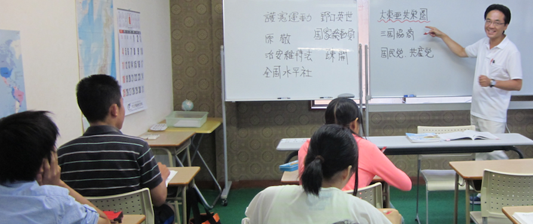
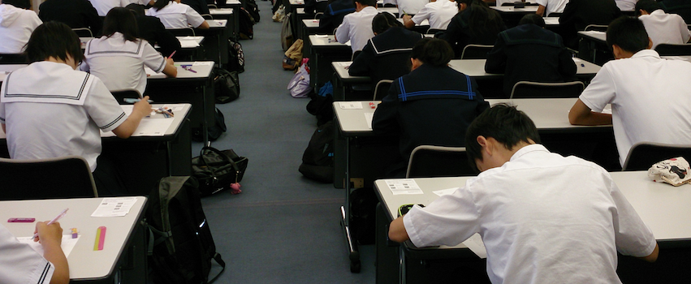
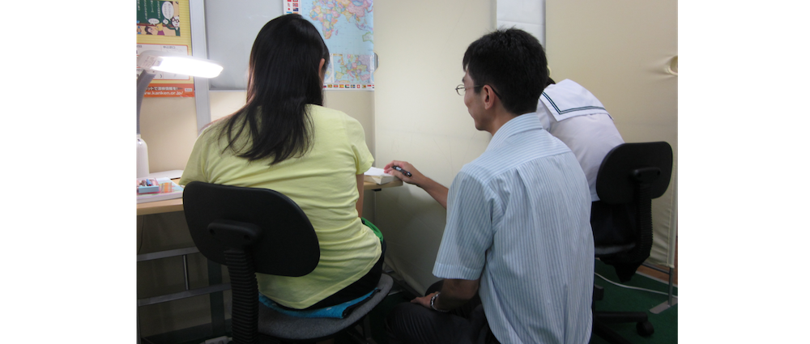
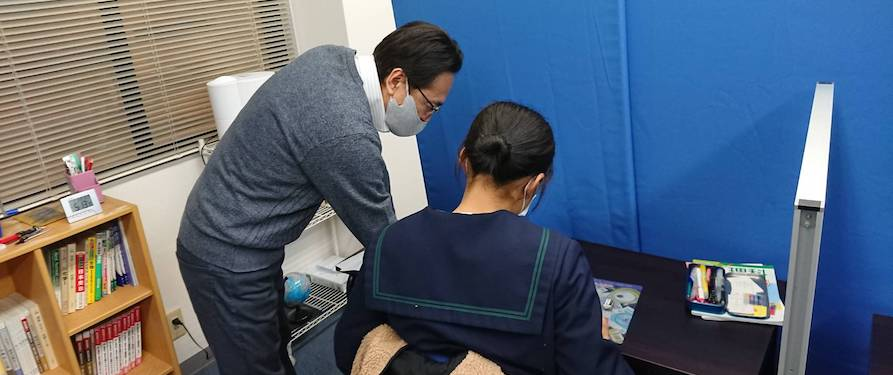

小学生から高校生まで指導を行なっているため、進学時にも継続的に学習を行うことができます。兄弟や姉妹がいらっしゃる場合でも一緒に通うことができます。

能美市の総合進学塾
修英セミナーは小学生から高校生まで総合的にサポートする地域密着型の学習塾です。徹底した受験対策、漢検や英検といった資格の取得、クラス指導と個別指導、各学校に合わせたテスト対策など、生徒一人ひとりに合わせた指導を行います。
Feature修英セミナーの特徴
-
FEATURE 1
小学生から高校生まで
 -
FEATURE 2
徹底した受験対策
 中学三年生を対象に、夏期講習・冬期講習といった集中受験対策講習を行なっています。
石川県総合模試協力塾であり、豊富な入試情報を基に個別面談や進路指導も実施しています。 -
FEATURE 3
漢検・英検の取得
修英セミナーは検定認定校であり、漢字検定・英語検定といった資格の取得もサポートしています。毎年多くの生徒がチャレンジして合格しています。資格の取得は実力・内申アップにつながり、受験にも有利に働きます。
-
FEATURE 4
クラス指導と個別指導
 学校のような形式で授業を行うクラス指導と個々のペースで学習を進める個別指導の2つのコースがあります。学習状況に応じて、自分にあったコースを選択することができます。
-
FEATURE 5
各学校に合わせたテスト対策
 テスト期間には通常の授業時間を延長し、各学校のテスト範囲や傾向に合わせて、過去問やテスト対策プリントを使った徹底演習を行っています。
Access教室所在地
〒923-1104 石川県能美市湯谷町ト62-1
＜湯野小学校すぐ＞
TEL：0120-969-265 (0761-58-4056)
FAX：0761-58-5541
Entrance入塾案内
無料体験随時受付中！
お気軽にお問い合わせ下さい
TEL：0120-969-265 (0761-58-4056)
Blog塾長ブログ
塾で教えること四半世紀、受験生1000名あまりと接してきた受験生応援団長。wild,vivid,smileをモットーに世界30ヶ国を旅してきた旅人であり、大の映画好き。教える情熱は誰にも負けません。
修英元気通信